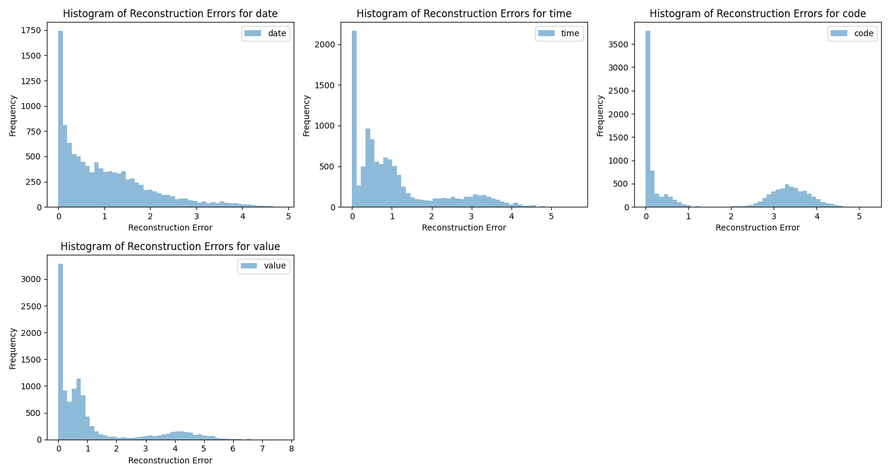
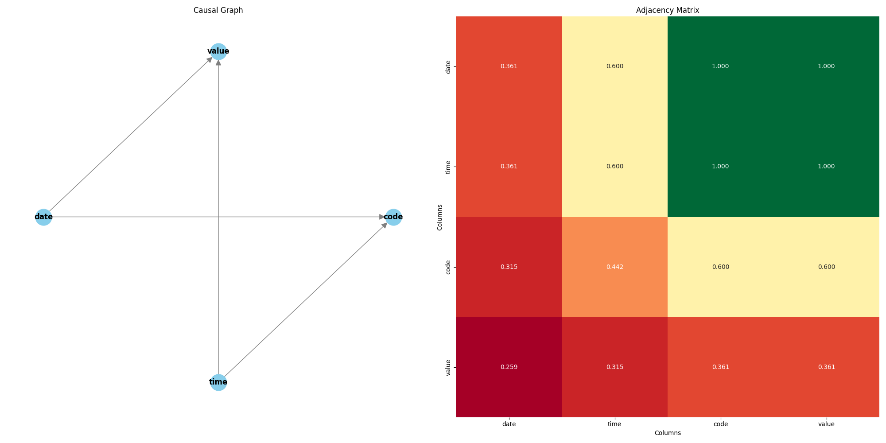

Explanation Report for Dataset: diabetes
This report provides a detailed explanation of how quasi-identifiers were identified in your dataset. Quasi-identifiers are attributes that, when combined, can potentially identify individuals. The report includes information on the methods used to detect these quasi-identifiers, their significance, and how various models and metrics contributed to this identification.
1. Quasi-Identifiers Selected
Attributes: date
2. Neural Network Models
We employed several neural network models to analyze and identify quasi-identifiers. Here’s a detailed overview of each model and its role:
- Variational Autoencoder (VAE): The VAE is a type of neural network designed to compress and then reconstruct data. It helps determine how well we can reconstruct each attribute from a simplified version. High reconstruction errors for an attribute suggest that it carries more unique or sensitive information.
- Transformer Encoder with Multihead Attention: Within the VAE, we use a Transformer Encoder equipped with Multihead Attention mechanisms. This setup allows the model to simultaneously focus on different parts of the data and learn complex patterns and relationships. Multihead Attention enhances the model's ability to capture complex dependencies between attributes, improving reconstruction accuracy.
- Causal Aggregation Layer: This layer incorporates causal information produced by causal discovery algorithms, such as GES (Greedy Equivalence Search) and PC (Peter-Clark), to understand and utilize the causal relationships between attributes. The Causal Aggregation Layer applies these causal relationships through an adjacency matrix to enhance the model's understanding of how different features interact and influence each other.
- Generative Adversarial Network (GAN): The GAN consists of two components: a generator that creates synthetic data (in this case the VAE) and a discriminator that differentiates between real and synthetic data. This adversarial setup helps in producing realistic data samples, which are then analyzed to detect anomalies or unusual patterns that might reveal quasi-identifiers.
3. Reconstruction Errors
Reconstruction errors indicate how well we can recreate an attribute from its compressed version. Large errors suggest that the attribute is more unique and could be important for identifying individuals:

Legend: The histogram shows the distribution of reconstruction errors. Attributes with larger errors are likely to be more significant for identification.
4. Causal Graph Insights
The causal graph visualizes the influence relationships between attributes. Stronger connections suggest more significant relationships:

Legend: Lines in the graph represent the influence between attributes. Attributes with stronger connections (darker lines) might be more critical for identifying individuals.
- Attributes with more connections in the causal graph are likely to be significant in identifying individuals.
- The graph provides a visual representation of how attributes are interconnected, aiding in identifying key attributes.
5. Isolation Forest Analysis
Isolation Forests were used to identify anomalies and unusual attributes. The analysis helps determine which attributes are more likely to be unique and important:
- Isolation Scores: Attributes with higher isolation scores are considered more unusual or unique.
- Weighted Votes: Attributes with higher votes are deemed more significant for identification.
7. Detailed Attribute Analysis
| Attribute | Weighted Vote | Mean Reconstruction Error | Causal Importance |
|---|
| date | 0.0819 | 1.0137 | High (2.9609) |
| time | 0.0000 | 1.0641 | High (2.9609) |
| code | 0.0033 | 1.6250 | Medium (1.9571) |
| value | 0.0000 | 1.0796 | Low (1.2957) |
8. Privacy Metrics
We calculated several metrics to evaluate the privacy impact of the identified quasi-identifiers:
Separation: 99.8197
Distinction: 7.6270
K-anonymity: 13.1114
9. Conclusion
This report outlines the process of identifying quasi-identifiers using advanced models and techniques. We analyzed reconstruction errors, causal relationships, and anomaly scores to pinpoint attributes that could potentially identify individuals. This comprehensive approach ensures a robust understanding of the dataset’s privacy risks and helps in safeguarding personal information while maintaining data utility.